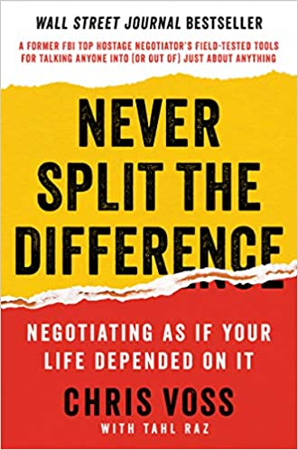

Date read: September 2020 Strength of recommendation: 8 / 10 Amazon page
Seung Sang is entertaining, eccentric, and immensely thought-provoking. I loved his introduction to Zen Buddhist thought, told through letters, stories, and accounts of the Korean Zen Master's teachings.
Never Split the Difference
Chris Voss

Date read: August 2020 Strength of recommendation: 8 / 10 Amazon page
Former FBI hostage negotiator Chris Voss shows you the ins and outs of his craft. This short book is immediately practical and highly engaging.
Show Notes
Highly logical negotiation theory fails because humans are irrational and emotional.
Voss' tools are designed to calm people down, establish rapport, gain trust, illicit verbalization of needs. We understand that people want to be understood and accepted, so we listen intensely to show empathy. The result is that our opponents become less aggressive and more open-minded.
Assumptions blind, hypotheses guide. Good negotiators know they need to be ready for surprises. Great negotiators use their skills to reveal the surprises they're certain exist.
The less important your counterpart makes himself using "we/us" pronouns the more important he probably is in his team's decision making process.
There are three voices you should consider when negotiating:
The FM DJ voice: a self-assured voice of calm and reason
A positive playful voice: Use most of the time, encourages positivity and cooperation
Am assertive dominant voice: Use with caution
Mirroring leverages the concept of "birds of a feather flock together." You send subtle signals that you're similar to your counterpart and should be bonded with. Seen often in body language. Voss’ recommendation: Continually repeat the last three words of what your counterpart just said.
In one study the tip for waiters who mirrored (In this case, that means repeated the customers’ orders back to them.) was something like 70% more than those who used praise (e.g. "no problem, great").
Labeling: a type of tactical empathy; understanding your opponents emotions, articulating them, and respectfully verbalizing them.
This is a great way to calm down scared or nervous people. By getting their anxiety in the open, you defuse it. Labels always begin with "it seems like," "it sounds like," or "it looks like."
Doing an accusation audit before a meeting can help identify possible labels. This entails identifying all the reasons your counterpart might be angry with you.
Always give your counterpart the opportunity to say no. Don't demand, collaborate.
There are 3 kinds of yes:
Counterfeit
Confirmation
Commitment
The power of no:Yes can be inauthentic. When a person says no, they feel in control and not just being taken for a ride. For example, always ask "Is now a bad time?” instead of “Is now a good time?" If you get a no, you know the person is going to be focused and not just distractedly playing along.
In general, that's right is a great sign. It signals your counterpart believes they’ve come up with a solution or idea themselves.
Alternatively, you're right is bad and often dismissive.
Use your opponent's deadlines against them. Cars salesman are more likely to give good deals at end of the month, businessmen at end of the financial quarter.
Remember that deadlines cut both ways. Let your opponents know your deadline and they'll feel the pressure too.
We may use reason to guide us toward decisions. But the actual decision making is always emotional.
Certainty effect: people will chose a certain outcome over a risky one even if payoff is likely to be less.
Loss aversion is hugely important for both marketing and negotiation.
Avoid anchoring (giving the first offer) in monetary bargaining. But beware of sharks who will give a ludicrous anchor to throw you off.
Numbers which end in 0 feel like placeholders. When bargaining try to use odd, precise numbers to close the deal.
Principle of Reciprocity: after a tough offer, give a non-monetary gift. The person will feel the need to repay.
In a job interview or salary negotiation, ask "what does it take to be successful here." That'll give the boss a personal stake in your success. Additionally, you've possibly just created an unofficial mentor.
The trick to negotiating is getting your counterpart to solve your problems without them noticing. Ask questions like "how am I supposed to do that?" Now they understand your problem and will instinctively try to help.
These should be open "reporter questions" which start with what or how.
Very common example What is the greatest challenge you face? What about this is important to you? How can I help to make this better for us? How would you like to proceed? How can we solve this problem? What are we trying to accomplish here? How am I supposed to do that?
In these questions you want with the other guy to think you need to use his intelligence. This diverts your opponents emotional and mental resources towards your goal and also moves them away from their adversarial state.
Who has control in a negotiation the talker or the listener? The listener of course. That's because the talker is revealing information.
We call these questions "calibrated questions." We call their effect "forced empathy."
Two key questions to make your counterpart feel like they are building their own solution: How will we know we're on track? How do we address things if we're off track?
The 7/38/55 rule states that 7% of what we communicate is done so through the verbal word, 35% is through the tone and intonation, and 55% is through our body language.
Four ways to say no:
How am I supposed to do that?
Thank you for your generous offer but that just doesn't work for me.
I'm sorry but I just can't do that.
I'm sorry, no.
There are three types of negotiators:
Assertives
Accommodaters
Analysts
A good negotiator knows how to be themselves at the bargaining table. A great negotiator adds to their strengths by understanding their weaknesses.
Ackerman Bargaining System (Quoted directly from the book):
Set your target price (your goal).
Set your first offer at 65 percent of your target price.
Calculate three raises of decreasing increments (to 85, 95, and 100 percent).
Use lots of empathy and different ways of saying “No” to get the other side to counter before you increase your offer.
When calculating the final amount, use precise, non round numbers like, say, $37,893 rather than $38,000. It gives the number credibility and weight.
On your final number, throw in a non monetary item (that they probably don’t want) to show you’re at your limit.
Dracula
Bram Stoker
Date read: August 2020 Strength of recommendation: 8 / 10 Amazon page / Audible
Date read: July 2020 Strength of recommendation: 9 / 10 Amazon page
Dawkins explores economic and evolutionary theory to explain the interplay of selfishness and altruism in nature. Worth reading alone for the incredible descriptions of regicidal insect colonies, game-theoretic fig trees, and the first ever use of the word meme.
Show Notes
In one sense, Darwin’s “survival of the fittest” may be rephrased as “survival of the stable.” Applied to the chaotic origins of life and DNA, this modification rings particularly true. In these primeval conditions, the simple replicators which preceded modern genetic material did well if they possessed three qualities. First longevity, they did not easily breakdown. Second fecundity, they replicated quickly. And third accuracy, they replicated with minimal error.
Dawkins defines a gene as: any portion of chromosomal material that potentially lasts for enough generations to serve as a unit of natural selection.
Dawkins defines an Evolutionary Stable Strategy or ESS as: a strategy which, if most members of a species adopt it, cannot be beaten by another strategy. Such a strategy may very well be encoded genetically and may therefore be subject to the same Darwinian analysis as any other phenotype.
Consider for example, the practice of cuckoo birds to parasite the nests of other species. This qualifies as an ESS since any cuckoo born without genetic encoding to employ this strategy would be at a certain disadvantage and ultimately its genes would not prevail over the majority.
In biological terms, the fundamental difference between males and females is that male gametes are smaller and more numerous than the gametes of females. The consequences of this asymmetry are many and profound. One is that males may be more likely to abandon their children in favor of pursuing other mates. To combat such behavior, females of several species evolved to either a) play coy, forcing males to invest more time and energy in the process of mate-finding or b) choose to mate with the strongest, most environmentally fit males regardless his potentially improbable honesty.
Naked mole rats organize themselves similarly to social insects like bees and ants. In fact, in any given mole rate colony only one female (the queen) breeds, and the vast majority of work is done by sterile individuals called workers.
Some species of ants wage war on and kidnap the eggs of other ant colonies. Once hatched these eggs are kept as the unwitting slaves of the aggressor ants. Even as they mature into adult worker ants, these slaves remain unaware that they serve a foreign species.
Dawkins defines memes as: units of cultural transmission. These are the new replicators. The ideas, songs, fashions, catch-phrases which abound in the evolving soup of human culture.
We can apply the same analysis of longevity, fecundity, and replication accuracy to memes. Additionally, we note that memes which do well are often psychologically appealing.
The fundamental principle necessary for memes to existence in a population is the capability of individuals to mimic one-another. In fact, the songs which live and mutate within populations of some bird species qualify as memes.
A parasite may transport its genes via the same vehicle as its host, i.e. through the host’s gametes in sexual reproduction. If this is the case, then the parasite has everything to gain by helping its host to survive and procreate, and over evolutionary time will cease to be a parasite at all.
In the ant species Bothriomyrmex regicides and B. decapitans, the queen sneaks into a foreign colony, assassinates via decapitation the rival queen, and then presides over the workers who unsuspectingly tend to her eggs and larvae. Over time her children will outnumber and replace the workers of the previous species. Some will fly to other colonies and repeat the regicidal ritual.
Fireflies attract their mates by flashing particular sequences of lights. The genus Photuris has evolved to mimic the flashing pattern of genus Photinus. In doing so, the females of the former attract and then devour the males of the latter.
American Gods
Neil Gaiman
Date read: July 2020 Strength of recommendation: 8 / 10 Amazon page
A thrilling novel. Gaiman employs gods old and new, providing deep insight into America and the nature of human belief.
A Room with a View
E. M. Forster
Date read: June 2020 Strength of recommendation: 6 / 10 Amazon page
Although I appreciated Forster's beautiful prose and the positive spirit of his ultimately feminist message, I couldn't help but feel the central romance of this novel has become, at least for a modern reader, predictable almost to the point of cliche.
Show Notes
There is only one perfect view—the view of the sky straight over our heads, and that all these views on earth are but bungled copies of it.
Above our heads is the heavenly ideal. It is that which we look up to with our aspirations and good intentions, that which we try to bring about in this world.
Men fall into two classes—those who forget views and those who remember them, even in small rooms.
Taken with the previous quote, perhaps Forster is suggesting that men either care for seeing and doing what is right in the world or they reject and forget these ideals altogether.
“Life” wrote a friend of mine, “is a public performance on the violin, in which you must learn the instrument as you go along.”
Travels with Charley in Search of America
John Steinbeck
Date read: June 2020 Strength of recommendation: 7 / 10 Amazon page
Steinbeck's road trip across America with his French poodle Charley makes for a charming and enjoyable read.
Show Notes
So I drove up the mountain and found a dairy, bought some milk, and asked permission to camp under an apple tree. The dairy man had a Ph.D. in mathematics, and he must have had some training in philosophy. He liked what he was doing and he didn't want to be somewhere else - one of the very few content people I met in my whole journey.
I'd like to imagine this figure as a living specimen of the archetypal old wise man, contented to live a life of simplicity.
He put my sins in a new perspective. Whereas they had been small and mean and nasty and best forgotten, this minister gave them some size and bloom and dignity... I wasn't a naughty child but a first rate sinner. ... All across the country I went to church on Sundays, a different denomination every week, but nowhere did I find the quality of that Vermont preacher. He forged a religion designed to last, not predigested obsolescence.
There’s something deeply unsatisfying about the idea that one’s sins are of little or no consequence. To instead recognize the human propensity to do real terrible evil gives meaning to one’s actions, and simultaneously makes indisputable not only one’s capacity, but one’s necessity, to do good in the world.
Like most Americans I am no lover of cops, and the consistent investigation of city forces for bribery, brutality, and a long picturesque list of malfeasances is not designed to reassure me.
Reading this in a book published in 1962 sobered me to what difficult, fundamental, and longlasting problems police brutality and corruption are, especially in light of the now recent murder of George Floyd.
Neverwhere
Neil Gaiman
Date read: May 2020 Strength of recommendation: 7 / 10 Amazon page
A fun book, though unlikely to be remembered as Gaiman's greatest work.
Dune
Frank Herbert
Date read: April 2020 Strength of recommendation: 9 / 10 Amazon page
A masterpiece of world-building and story. I found myself listening to the audiobook for hours into the night, lost in Herbert's fiction.
Zen and the Art of Motorcycle Maintenance
Robert M. Pirsig
Date read: April 2020 Strength of recommendation: 10 / 10 Amazon page
A philosophical dive into the intersection of rationality, intuition, and values. This work greatly shaped the way I see Eastern and Western thought.
Can't Hurt Me
David Goggins
Date read: March 2020 Strength of recommendation: 9 / 10 Amazon page
The only audiobook I've ever listened to a second time as soon as I finished the first. Goggins overcame child abuse, poverty, and small-town racism to go on to lose over a 100 lbs and become a celebrated Navy SEAL and ultramarathon runner. Absolutely inspirational.
The Art of Learning
Josh Waitzkin
Date read: March 2020 Strength of recommendation: 9 / 10 Amazon page
Waitzkin provides a wealth of wisdom in the space of high performance psychology. My second time reading this book.
Bonus: Spanish Titles
Harry Potter y la Piedra Filosofal, J. K. Rowling
Percy Jackson: El Ladron del Rayo, Rick Riordan
Percy Jackson: El Mar de los Monstruos, Rick Riordan